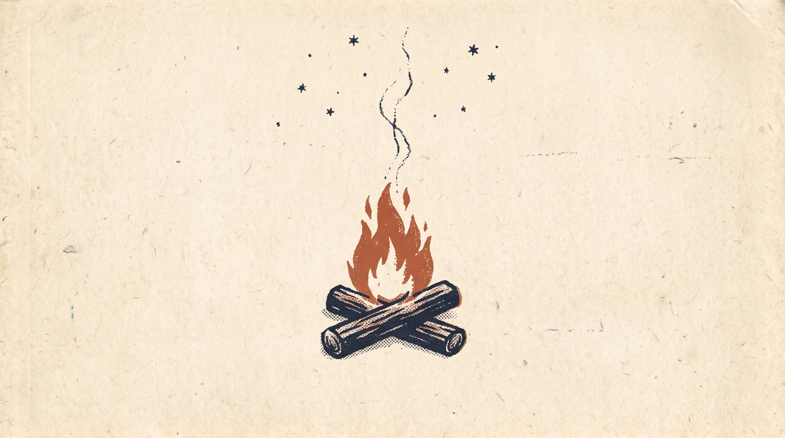
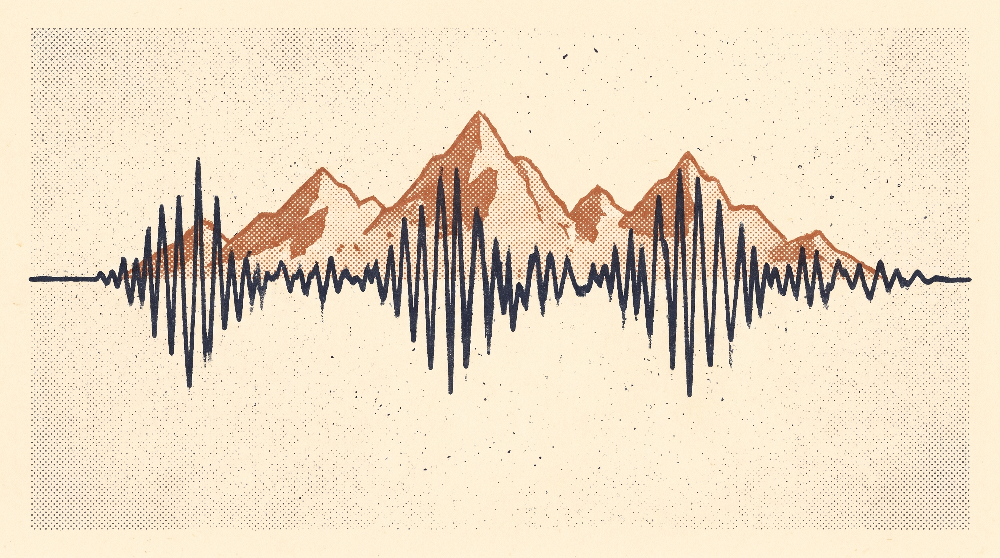
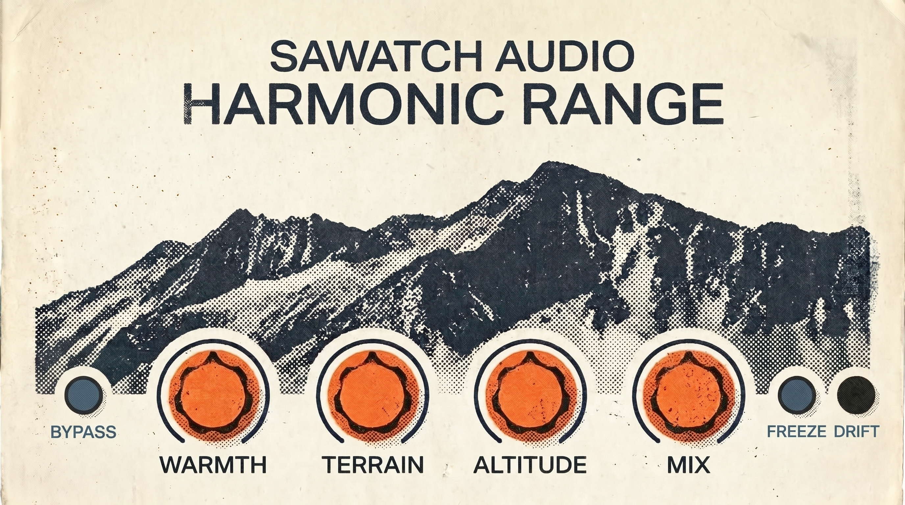

Philosophy
Sawatch Audio makes tools for players who want their gear to carry a sense of place. The warmth of a room. The distance of a ridgeline. The wear of years outdoors. No presets pretending to be a mood. Just controls that respond the way the outdoors do.

Sound
Every Sawatch tool trades a wall of presets for a small number of controls built to be pushed hard and lived with.
Gear

Tube warmth, granular texture, and a dense ambient wash, built for the space between an overdrive and a big reverb pedal. VST3 · AU · Standalone.
Listen
"Peak Light" · recorded through Harmonic Range